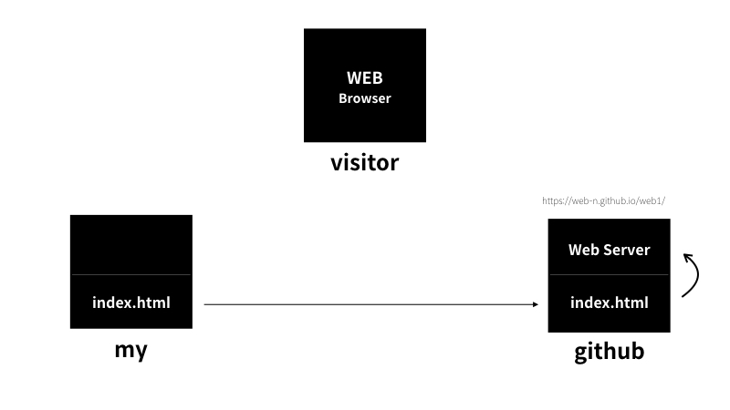
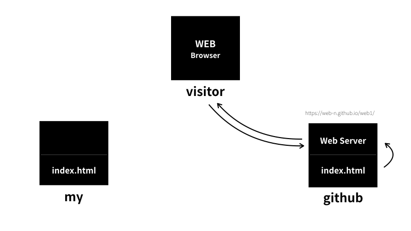
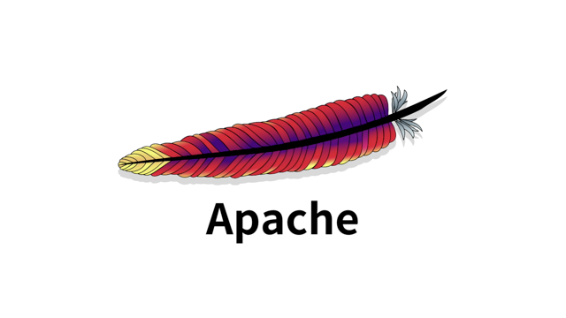

커버 페이지
남의 문제를 통해서 코딩을 배우려는 학생이 아니라 나의 문제를 코딩으로 해결하려는 엔지니어라고 상상해주세요
어떤 문제가 우리 삶에서 중요하고 심각할수록 그 문제를 해결해주는 공부는 문제로부터 우리를 해방시켜줄 것입니다
반대로 그 문제가 우리 삶과 동떨어져 있고 사소하다면 어떻게 될까요?
공부자체가 삶의 문제가 되어서 우리를 억압할 것입니다
공부의 효용을 뇌에게 자주 증명해 보인다면 우리의 뇌는 공부를 좋아하는 뇌가 될 것입니다
공부를 좋아하게 된다면 노력하지 않아도 우리는 공부 거리를 찾게 될 것입니다
프로젝트의 동기
기획
무엇인가를 만들기 전에 무엇을 만들 것인가를 미리 상상하고, 계획해보는 과정이 필요합니다. 이런 과정을 기획이라고 해요.
코딩과 HTML
기획을 끝냈으니까 이제 구현을 할 차례입니다.
웹페이지를 만드는 컴퓨터 언어가 HTML 입니다. HTML은 쉽고 중요합니다.
웹은 퍼블릭 도메인(Public Domain) 입니다. 즉 웹은 저작권이 없습니다.
HTML 코딩 실습환경준비
코딩을 하기 위해서는 에디터라는 프로그램이 필요합니다.
예를들어 bracket, atom, visual studio code, sublime text, notepad++ 등등 아주 많습니다.
기본 문법-태그
혁명적인 변화
오랜 시간 공부에 대해서 오해한 게 있습니다. 중요한 것은 어렵고 쉬운 것은 사소하다는 것입니다.
이렇게 생각하게 된 이유가 무엇인지 가만히 생각해 보니까 쉬운 것은 시험에 나오지 않기 때문이었던 것 같습니다.
시험의 목적은 누가 얼마나 열심히 공부했는지를 구분하는 것이기 때문에 틀릴 만한 것이 출제됩니다.
이런 상태가 오래 지속되면 어려운 것이 중요하고, 쉬운 것은 중요하지 않다는 생각을 하게 되는 것 같습니다.
생활코딩을 하면서 느낀 것 중에 가장 귀한 것은 꼭 그런 것은 아니라는 것을 알게 된 것입니다.
처음에 배우는 것은 쉽지만 중요합니다. 가장 자주 사용되는 부품이면서, 그 부품을 결합해서 새로운 완제품을 만들어 내는 결합방법이기 때문입니다.
통계에 기반한 학습
줄바꿈
HTML이 중요한 이유
공부를 하면 보이지 않던 것이 보이기 시작합니다. 들리지 않던 것이 들리기 시작합니다.
정보사회에서 HTML을 의미에 맞게 잘 사용하는 것은 비즈니스적인 측면에서 매우 중요합니다.
웹의 핵심적인 철학은 접근성입니다. 웹은 모든 운영체제에서 동작하고, 웹페이지의 소스코드는 누구나 볼 수 있고, 웹은 저작권이 없는 순수한 공공재입니다.
웹의 이런 특징들이 웹을 다른 기술들과 구별되는 특별한 것으로 만든다고 생각합니다.
최후의 문법속성과 img
부모 자식과 목록
문서의 구조와 슈퍼스타들
HTML 태그의 제왕
처음엔 링크를 따라 여행하는 웹서핑을 공부라고 생각하지 않았지만, 이제는 그것이 진정한 공부라고 생각하게 되었어요.
또 나는 공부를 좋아하는 사람이 되었다는 것을 알게 되었구요.
링크를 통해서 정보를 탐험하고, 문제를 해결하고 있으면서그 과정이 즐겁다면 여러분은 이미 공부를 좋아하고, 잘하고 있는 것입니다.
웹사이트 완성
원시웹
인터넷을 여는 열쇠: 서버와 클라이언트

웹호스팅(github pages)
GitHub
GitHub Read the guide
이 서비스는 프로그래머들에게는 성지와 같은 중요한 서비스입니다.
전세계의 수많은 오픈소스들이 이곳에서 만들어지고 있거든요.
우리는 github가 제공하는 여러 기능 중 웹호스팅 기능을 이용해서 우리의 홈페이지를 운영할 것입니다.


웹서버 운영하기

웹서버 운영:윈도우
윈도우에 웹서버 설치
웹서버와 http
웹브라우저와 웹서버의 통신
수업을 마치며1
수업을 마치며2
수업을 마치며3
부록:코드의 힘
부록:코드의 힘-동영상 삽입
부록:코드의 힘-댓글 기능 추가
부록:코드의 힘-채팅 기능 추가
부록:코드의 힘-방문자 분석기